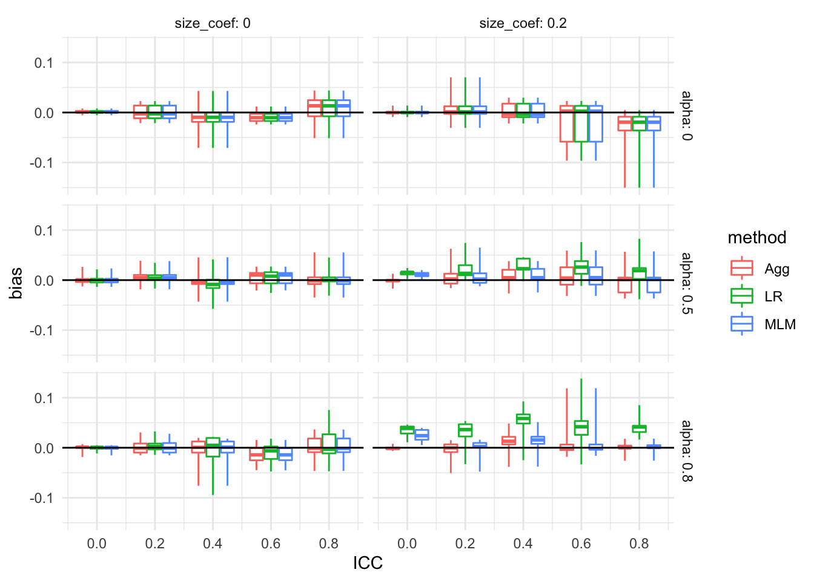
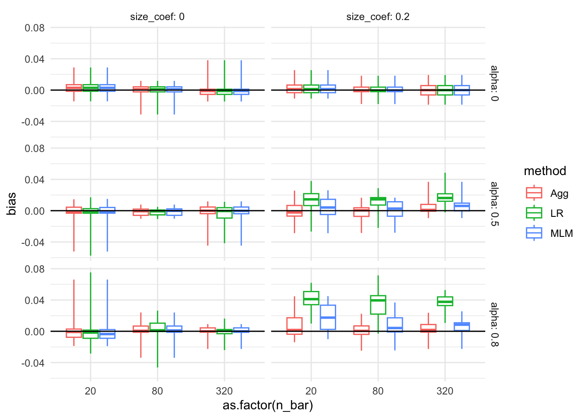
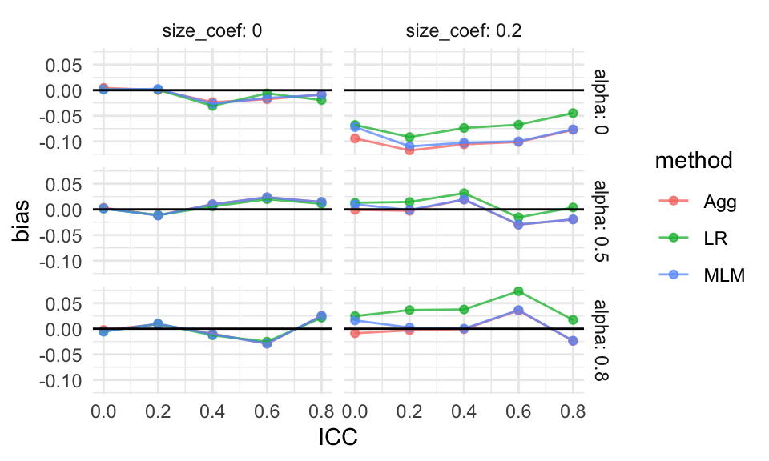
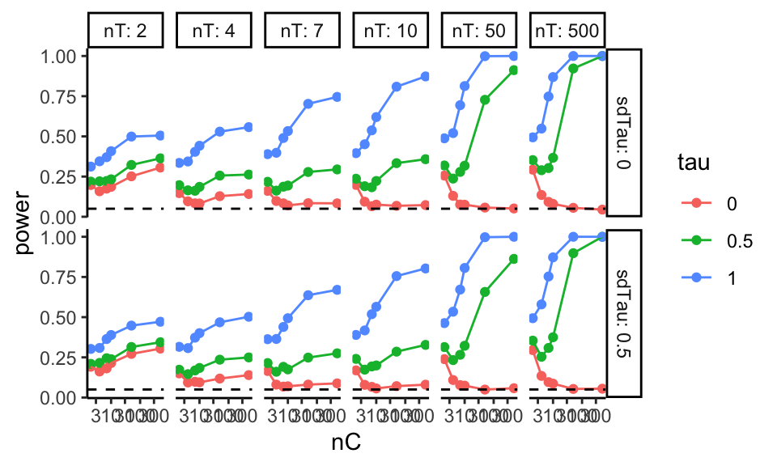
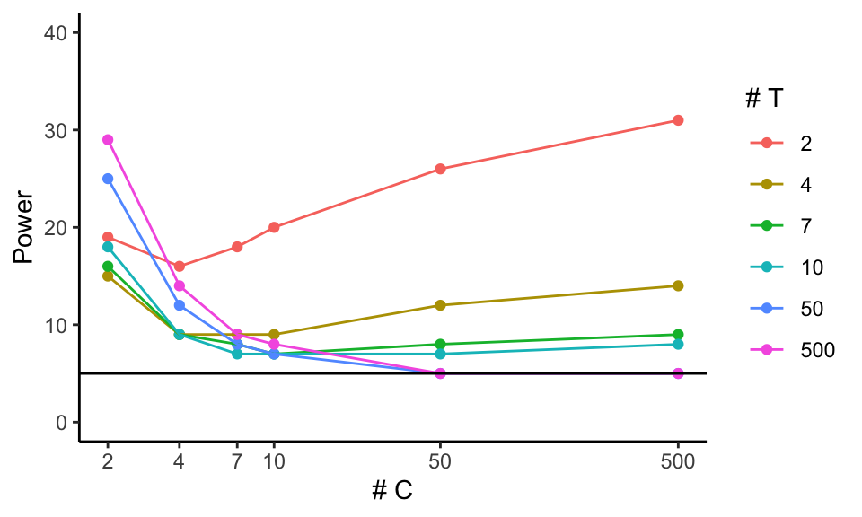
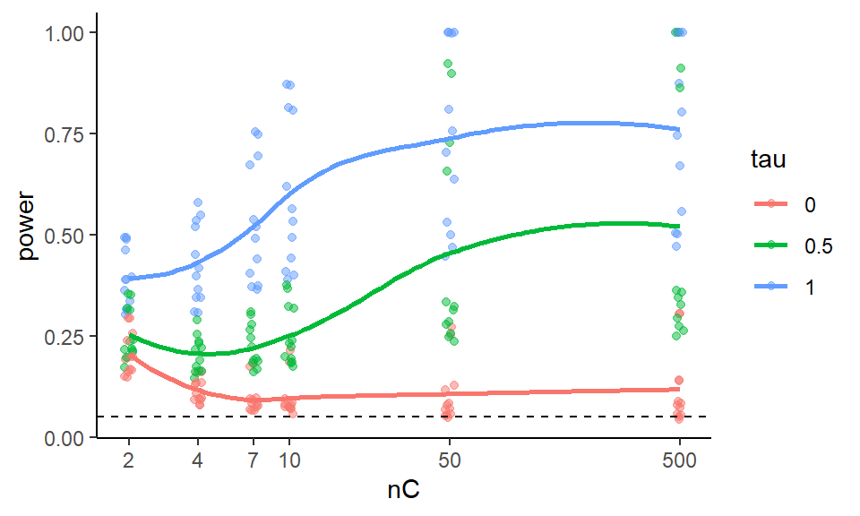
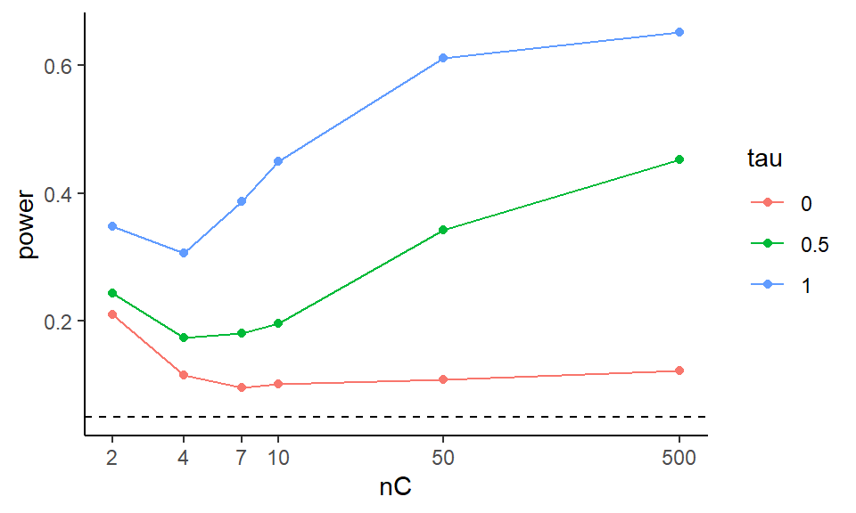
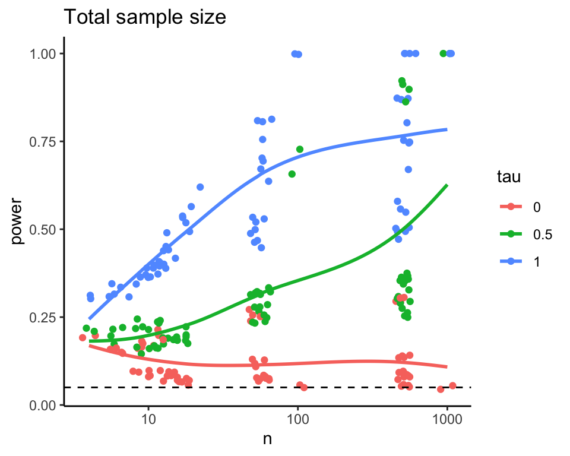
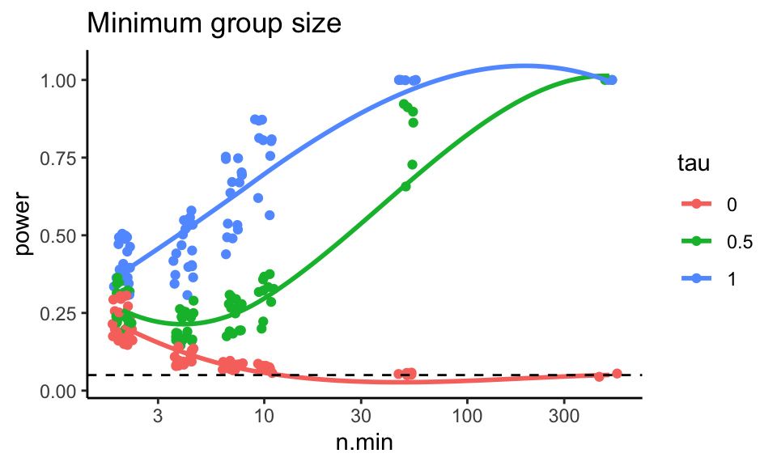

Chapter 10 Analyzing the multifactor experiment
Once we have performance measures for all our simulation scenarios, how do we explore them? For our Cluster RCT simulation, we have 270 different simulation runs across our factors (with three rows per simulation run, one for each method). How can we visualize and understand trends across this complex domain?
There are several techniques for summarizing across the data that one might use.
10.1 Bundling
As a first step, we might bundle the simulations by the primary factors of interest. We would then plot these bundles as box plots to see central tendency along with variation. With bundling, we would need a good number of simulation runs per scenario, so that the MCSE in the performance measures does not make our boxplots look substantially more variable than the truth.
For example, as a first step to understanding bias, we might bundle our results by ICC. In this code we are making groups of method by ICC level so we get side-by-side boxplots for each ICC level considered:
res <- readRDS( "results/simulation_CRT.rds" )
ggplot( sres, aes( ICC, bias, col=method, group=paste0(ICC,method) ) ) +
facet_grid( alpha ~ size_coef, labeller = label_both ) +
geom_boxplot(coef = Inf) +
geom_hline( yintercept = 0 ) +
theme_minimal() +
scale_x_continuous( breaks = unique( sres$ICC) )
Each box is a collection of simulation trials. E.g., for ICC = 0.6, size_coef = 0.2, and alpha = 0.8 we have 9 scenarios representing the varying level 1 and level 2 sample sizes:
filter( sres, ICC == 0.6, size_coef == 0.2,
alpha == 0.8, method=="Agg" ) %>%
dplyr::select( n_bar:alpha, bias )## # A tibble: 9 × 7
## n_bar J ATE size_coef ICC alpha bias
## <dbl> <dbl> <dbl> <dbl> <dbl> <dbl> <dbl>
## 1 20 5 0.2 0.2 0.6 0.8 0.00799
## 2 20 20 0.2 0.2 0.6 0.8 -0.0445
## 3 20 80 0.2 0.2 0.6 0.8 0.0206
## 4 80 5 0.2 0.2 0.6 0.8 0.111
## 5 80 20 0.2 0.2 0.6 0.8 -0.0144
## 6 80 80 0.2 0.2 0.6 0.8 0.0132
## 7 320 5 0.2 0.2 0.6 0.8 0.151
## 8 320 20 0.2 0.2 0.6 0.8 0.0361
## 9 320 80 0.2 0.2 0.6 0.8 0.0394We are seeing a few outliers for some of the boxplots, suggesting that there are other factors driving bias. We could try bundling along different aspects to see:
ggplot( sres, aes( as.factor(n_bar), bias, col=method, group=paste0(n_bar,method) ) ) +
facet_grid( alpha ~ size_coef, labeller = label_both ) +
geom_boxplot(coef = Inf) +
geom_hline( yintercept = 0 ) +
theme_minimal()
No progress there. Perhaps it is instability or MCSE. We make a note to investigate further, later on.
10.2 Aggregation
The boxplots are hard for seeing trends. Instead of bundling, we can therefore aggregate, to look at overall trends rather than individual simulation variation. This is especially important if the number of replicates within each scenario is small, because then each scenario’s performance is measured with a lot of error.
With aggregation, we average over some of the factors, collapsing our simulation results down to fewer moving parts. This is better than having not had those factors in the first place! Averaging over a factor is a more general answer than having not varied the factor at all.
For example, if we average across ICC and site variation, and see how the methods change performance as a function of \(J\), we would know that this is a general trend across a range of scenarios defined by different ICC and site variation levels. Our conclusions would then be more general than if we picked a single ICC and amount of site variation: in this latter case we would not know if we would see our trend more broadly.
Also, with aggregation, we can have a smaller number of replications per factor combination. The averaging will, in effect, give a lot more reps per aggregated performance measure.
A caution with aggregation is that it can be deceitful if you have scaling issues or extreme outliers. With bias, our scale is fairly well set, so we are good! But if we were aggregating standard errors over sample size, then the larger standard errors of the smaller sample size simulations (and the greater variability in estimating those standard errors) would swamp the standard errors of the larger sample sizes. Usually, with aggregation, we want to average over something we believe will not change massively over the marginalized-out factors. Alternatively, we can average over a relative measure, which tend to be more invariant and comparable across scenarios.
For our cluster RCT, we might aggregate as follows:
ssres <-
sres %>%
group_by( ICC, method, alpha, size_coef ) %>%
summarise( bias = mean( bias ) )
ggplot( ssres, aes( ICC, bias, col=method ) ) +
facet_grid( alpha ~ size_coef, labeller = label_both ) +
geom_point( alpha=0.75 ) +
geom_line( alpha=0.75 ) +
geom_hline( yintercept = 0 ) +
theme_minimal()
This shows that site variation leads to greater bias, but only if the coefficient for size is nonzero. We also see that all the estimators must be the same if site variation is 0, with the overplotted lines on the top row of the figure.
10.3 Regression Summarization
One can treat the simulation results as a dataset in its own right. In this case we can regress a performance measure against the methods and various factor levels to get “main effects” of how the different levels impact performance holding the other levels constant. The main effect of the method will tell us if a method is, on average, higher or lower than the baseline method. The main effect of the factors will tell us if that factor impacts the performance measure.
These regressions can also include interactions between method and factor, to see if some factors impact different methods differently. They can also include interactions between factors, which allows us to explore how the impact of a factor can matter more or less, depending on other aspects of the context.
For our cluster RCT, we might have, for example:
sres_f = sres %>%
mutate( across( c( n_bar, J, size_coef, ICC, alpha ), factor ) )
M <- lm( bias ~ (n_bar + J + size_coef + ICC + alpha) * method,
data = sres_f )
stargazer::stargazer(M, type = "text",
single.row = TRUE )##
## ==================================================
## Dependent variable:
## ---------------------------
## bias
## --------------------------------------------------
## n_bar80 -0.009 (0.007)
## n_bar320 -0.006 (0.007)
## J20 0.004 (0.007)
## J80 0.006 (0.007)
## size_coef0.2 -0.035*** (0.006)
## ICC0.2 -0.004 (0.009)
## ICC0.4 -0.002 (0.009)
## ICC0.6 -0.003 (0.009)
## ICC0.8 0.001 (0.009)
## alpha0.5 0.055*** (0.007)
## alpha0.8 0.053*** (0.007)
## methodLR -0.007 (0.014)
## methodMLM 0.006 (0.014)
## n_bar80:methodLR -0.001 (0.010)
## n_bar320:methodLR 0.001 (0.010)
## n_bar80:methodMLM -0.001 (0.010)
## n_bar320:methodMLM -0.002 (0.010)
## J20:methodLR 0.006 (0.010)
## J80:methodLR 0.005 (0.010)
## J20:methodMLM 0.002 (0.010)
## J80:methodMLM 0.002 (0.010)
## size_coef0.2:methodLR 0.030*** (0.008)
## size_coef0.2:methodMLM 0.006 (0.008)
## ICC0.2:methodLR 0.003 (0.013)
## ICC0.4:methodLR 0.0004 (0.013)
## ICC0.6:methodLR 0.005 (0.013)
## ICC0.8:methodLR 0.002 (0.013)
## ICC0.2:methodMLM -0.006 (0.013)
## ICC0.4:methodMLM -0.008 (0.013)
## ICC0.6:methodMLM -0.008 (0.013)
## ICC0.8:methodMLM -0.008 (0.013)
## alpha0.5:methodLR -0.007 (0.010)
## alpha0.8:methodLR 0.004 (0.010)
## alpha0.5:methodMLM -0.002 (0.010)
## alpha0.8:methodMLM -0.0003 (0.010)
## Constant -0.034*** (0.010)
## --------------------------------------------------
## Observations 810
## R2 0.302
## Adjusted R2 0.270
## Residual Std. Error 0.046 (df = 774)
## F Statistic 9.547*** (df = 35; 774)
## ==================================================
## Note: *p<0.1; **p<0.05; ***p<0.01We can quickly get a lot of features, and this approach can be hard to interpret. But picking out the significant coefficents does provide a lot of clues, rather rapidly. E.g., many features interact with the LR method for bias. The other methods seem less impacted.
10.4 Focus on subset, kick rest to supplement
Frequently researchers might simply filter the simulation results to a single factor level for some nuisance parameter. For example, we might examine ICC of 0.20 only, as this is a “reasonable” value given substance matter knowledge. We would then consider the other levels as a “sensitivity” analysis vaguely alluded to in our main report and placed elsewhere, such as an online supplemental appendix.
It would be our job, in this case, to verify that our reported findings on the main results indeed were echoed in our other, set-aside, simulation runs.
10.5 Analyzing results when some trials have failed
If methods fail, then this is something to investigate in its own right. Ideally, failure is not too common, so we can drop those trials, or keep them, without really impacting our overall results. But one should at least know what one is ignoring.
For example, in our cluster RCT, we know we have, at least sometimes, convergence issues. We know that ICC is an important feature, so we can explore how often we get a convergence message by ICC level:
res %>%
group_by( method, ICC ) %>%
summarise( message = mean( message ) ) %>%
pivot_wider( names_from = "method", values_from="message" )## Warning in mean.default(message): argument is not
## numeric or logical: returning NA
## Warning in mean.default(message): argument is not
## numeric or logical: returning NA
## Warning in mean.default(message): argument is not
## numeric or logical: returning NA
## Warning in mean.default(message): argument is not
## numeric or logical: returning NA
## Warning in mean.default(message): argument is not
## numeric or logical: returning NA
## Warning in mean.default(message): argument is not
## numeric or logical: returning NA
## Warning in mean.default(message): argument is not
## numeric or logical: returning NA
## Warning in mean.default(message): argument is not
## numeric or logical: returning NA
## Warning in mean.default(message): argument is not
## numeric or logical: returning NA
## Warning in mean.default(message): argument is not
## numeric or logical: returning NA
## Warning in mean.default(message): argument is not
## numeric or logical: returning NA
## Warning in mean.default(message): argument is not
## numeric or logical: returning NA
## Warning in mean.default(message): argument is not
## numeric or logical: returning NA
## Warning in mean.default(message): argument is not
## numeric or logical: returning NA
## Warning in mean.default(message): argument is not
## numeric or logical: returning NA## # A tibble: 5 × 4
## ICC Agg LR MLM
## <dbl> <dbl> <dbl> <dbl>
## 1 0 NA NA NA
## 2 0.2 NA NA NA
## 3 0.4 NA NA NA
## 4 0.6 NA NA NA
## 5 0.8 NA NA NAWe see that when the ICC is 0 we get a lot of convergence issues, but as soon as we pull away from 0 it drops off considerably. At this point we might decide to drop those runs with a message or keep them. In this case, we decide to keep. It shouldn’t matter much in any case except the ICC = 0 case, and we know the convergence is due to trying to estimate a 0 variance, and thus is in some sense expected. Furthermore, we know people using these methods would likely ignore these messages, and thus we are faithfully capturing how these methods would be used in practice. We might eventually, however, want to do a separate analysis of the ICC = 0 context to see if the MLM approach actually falls apart, or if it is just throwing error messages.
10.6 A demonstration of visualization
Let’s explore a case study comparing different visualizations of the same performance metric (in this case, power). The goal is to see how to examine a metric from several perspectives, and to see how to explore simulation results across scenarios.
For this example, we are going to look at a randomized experiment. We will generate control potential outcomes, and then add a treatment effect to the treated units. We assume the control group is normally distributed. We will generate a random data set, estimate the treatment effect by taking the difference in means and calculating the associated standard error, and generating a \(p\)-value using the normal approximation. (As we will see, this is not a good idea for small sample size since we should be using a \(t\)-test style approach.)
Violating our usual modular approach, we ae going to have a single function that does an entire step: it generates two groups of the given sizes, one treatment and one control, and then calculates the difference in means. It will then test this difference using the normal approximation.
The function also calculates and returns the true effect size of the DGP as the true treatment effect divided by the control standard deviation (useful for understanding power, shown later on).
run.one = function( nC, nT, sdC, tau, mu = 5, sdTau = 0 ) {
Y0 = mu + rnorm( nC, sd=sdC )
Y1 = mu + rnorm( nT, sd=sdC ) + tau + rnorm( nT, sd=sdTau )
tau.hat = mean( Y1 ) - mean( Y0 )
SE.hat = sqrt( var( Y0 ) / ( nC ) + var( Y1 ) / ( nT ) )
z = tau.hat / SE.hat
pv = 2 * (1 - pnorm( abs( z ) ))
data.frame( tau.hat = tau.hat, SE.hat = SE.hat, z=z, p.value=pv )
}Our function generates a data set, analyzes it, and give us back a variety of results as a one-row dataframe, as per usual:
run.one( nT=5, nC=10, sdC=1, tau=0.5 )## tau.hat SE.hat z p.value
## 1 -0.246767 0.6607213 -0.3734812 0.7087903In this case, our results are a mix of the parameters and estimated quantities.
We then write a function that runs our single trial multiple times and summarizes the results:
run.experiment = function( nC, nT, sdC, tau, mu = 5, sdTau = 0, R = 500 ) {
eres = replicate( R, run.one( nC, nT, sdC, tau, sdTau=sdTau, mu=mu ),
simplify=FALSE )
eres = bind_rows( eres )
eres %>% summarise( E.tau.hat = mean( tau.hat ),
E.SE.hat = mean( SE.hat ),
power = mean( p.value <= 0.05 ) ) %>%
mutate( nC=nC, nT=nT, sdC=sdC, tau=tau, mu=mu, sdTau=sdTau, R=R )
}For performance, we have the average average treatment effect estimate E.tau.hat,
the average Standard Error estimate E.SE.hat,
and the power power (defined as the percent of time we reject at
alpha=0.05, i.e., the percent of times our \(p\)-value was less than our 0.05
threshold):
Our function also adds in the details of the simulation (the parameters we passed
to the run.one() call). This is an easy way to keep track of things.
We test our function to see what we get:
run.experiment( 10, 3, 1, 0.5, 5, 0.2 )## E.tau.hat E.SE.hat power nC nT sdC tau mu
## 1 0.497077 0.6284977 0.218 10 3 1 0.5 5
## sdTau R
## 1 0.2 500We next use the above to run a multi-factor simulation experiment. We are going to vary four factors: control group size, treatment group size, standard deviation of the units, and the treatment effect.
nC = c( 2, 4, 7, 10, 50, 500 )
nT = c( 2, 4, 7, 10, 50, 500 )
sdC = c( 1 )
tau = c( 0, 0.5, 1 )
sdTau = c( 0, 0.5 )
experiments = expand_grid( nC=nC, nT=nT, sdC=sdC, tau=tau, sdTau = sdTau )
experiments## # A tibble: 216 × 5
## nC nT sdC tau sdTau
## <dbl> <dbl> <dbl> <dbl> <dbl>
## 1 2 2 1 0 0
## 2 2 2 1 0 0.5
## 3 2 2 1 0.5 0
## 4 2 2 1 0.5 0.5
## 5 2 2 1 1 0
## 6 2 2 1 1 0.5
## 7 2 4 1 0 0
## 8 2 4 1 0 0.5
## 9 2 4 1 0.5 0
## 10 2 4 1 0.5 0.5
## # … with 206 more rows
## # ℹ Use `print(n = ...)` to see more rowsWe next run an experiment for each row of our dataframe of experiment factor combinations, and save the results. Note our method of adding the design parametes into our results makes this step arguably moe clean than some of the other templates we have seen.
exp.res <- experiments %>% pmap_df( run.experiment, R=2000 )
dir.create("results", showWarnings = FALSE )
saveRDS( exp.res, file="results/Neyman_RCT_results.rds" )The R=500 after run.experiment passes the same parameter of \(R=500\) to each
run (we run the same number of trials for each experiment).
We can put it there rather than have it be a column in our list of factors to run.
Here is a peek at our results:
head( exp.res )## E.tau.hat E.SE.hat power nC nT sdC tau mu
## 1 -0.001525155 0.8818917 0.1975 2 2 1 0.0 5
## 2 -0.026286662 0.9307269 0.1915 2 2 1 0.0 5
## 3 0.485430674 0.8861287 0.2185 2 2 1 0.5 5
## 4 0.452375661 0.9363909 0.2095 2 2 1 0.5 5
## 5 1.029038283 0.8915091 0.3120 2 2 1 1.0 5
## 6 0.957434064 0.9347139 0.3025 2 2 1 1.0 5
## sdTau R
## 1 0.0 2000
## 2 0.5 2000
## 3 0.0 2000
## 4 0.5 2000
## 5 0.0 2000
## 6 0.5 200010.6.1 The initial analysis
We are ready to analyze.
We start with plotting.
Plotting is always a good way to vizualize simulation results.
We first make
our tau into a factor, so ggplot behaves, and then plot all our
experiments as two rows based on one factor (sdTau) with the columns being
another (nT). (This style of plotting a bunch of small plots is called
“many multiples” and is beloved by Tufte.) Within each plot we have the
x-axis for one factor (nC) and multiple lines for the final factor (tau).
The \(y\)-axis is our outcome of interest, power. We add a 0.05 line to show
when we are rejecting at rates above our nominal \(\alpha\). This plot shows
the relationship of 5 variables.
exp.res = exp.res %>% mutate( tau = as.factor( tau ) )
ggplot( exp.res, aes( x=nC, y=power, group=tau, col=tau ) ) +
facet_grid( sdTau ~ nT, labeller=label_both ) +
geom_point() + geom_line() +
scale_x_log10() +
geom_hline( yintercept=0.05, col="black", lty=2) We ae looking at power for different control and treatment group sizes. The tau is our treatment effect, and so for \(\tau = 0\) we are looking at validity (false rejection of the null) and for the other \(\tau\) power (noticing an effect when it is there). Notice that we are seeing elevated rejection rates under the null for small and even moderate sample sizes!
10.6.2 Focusing on validity
We can zoom in on specific simulations run, to get some more detail
such as estimated power under the null for larger groups. Here we check
and we are seeing rejection rates (power) of around 0.05, which is what we want.
filter( exp.res, tau==0, nT >= 50, nC >= 50 ) %>%
knitr::kable(digits=2)| E.tau.hat | E.SE.hat | power | nC | nT | sdC | tau | mu | sdTau | R |
|---|---|---|---|---|---|---|---|---|---|
| 0 | 0.20 | 0.06 | 50 | 50 | 1 | 0 | 5 | 0.0 | 2000 |
| 0 | 0.21 | 0.05 | 50 | 50 | 1 | 0 | 5 | 0.5 | 2000 |
| 0 | 0.15 | 0.06 | 50 | 500 | 1 | 0 | 5 | 0.0 | 2000 |
| 0 | 0.15 | 0.05 | 50 | 500 | 1 | 0 | 5 | 0.5 | 2000 |
| 0 | 0.15 | 0.05 | 500 | 50 | 1 | 0 | 5 | 0.0 | 2000 |
| 0 | 0.16 | 0.06 | 500 | 50 | 1 | 0 | 5 | 0.5 | 2000 |
| 0 | 0.06 | 0.04 | 500 | 500 | 1 | 0 | 5 | 0.0 | 2000 |
| 0 | 0.07 | 0.06 | 500 | 500 | 1 | 0 | 5 | 0.5 | 2000 |
We can get fancy and look at rejection rate (power under tau = 0) as a
function of both nC and nT using an interaction-style plot where we average over the other variables:
exp.res.rej <- exp.res %>% filter( tau == 0 ) %>%
group_by( nC, nT ) %>%
summarize( power = mean( power ) )
exp.res.rej = mutate( exp.res.rej, power = round( power * 100 ) )
ggplot( exp.res.rej, aes( x=nC, y=power, group=nT, col=as.factor(nT) ) ) +
geom_point() + geom_line() +
geom_hline( yintercept = 5 ) +
scale_y_continuous( limits = c( 0, 40 ) ) +
scale_x_log10( breaks = unique( exp.res.rej$nC ) ) +
labs( x = "# C", y = "Power", colour = "# T" )
This plot focuses on the validity of our test. It shows that we have massively elevated rates when either the number of treated or control units is small (10 or below). It also shows that as the size of one group increases, if the other is small our rejection rates climb! Note how for 4 control units, the \(n_T = 500\) line is above the others (except for the \(n_T = 2\) line).
10.6.3 Looking at main effects
We can ignore all the other factors while we look at one specific factor of interest. This is looking at the main effect or marginal effect of the factor.
The easy way to do this is to let ggplot smooth our individual points on a
plot. Be sure to also plot the individual points to see variation, however.
ggplot( exp.res, aes( x=nC, y=power, group=tau, col=tau ) ) +
geom_jitter( width=0.02, height=0, alpha=0.5 ) +
geom_smooth( se = FALSE ) +
scale_x_log10( breaks=nC) +
geom_hline( yintercept=0.05, col="black", lty=2)
Note how we see our individual runs that we marginalize over as the dots.
To look at our main effects we can also summarize our results, averaging our experimental runs across other factor levels. For example, in the code below we average over the different treatment group sizes and standard deviations, and plot the marginalized results.
To marginalize, we group by the things we want to keep. summarise() then
averages over the things we want to get rid of.
exp.res.sum = exp.res %>% group_by( nC, tau ) %>%
summarise( power = mean( power ) )
head( exp.res.sum )## # A tibble: 6 × 3
## # Groups: nC [2]
## nC tau power
## <dbl> <fct> <dbl>
## 1 2 0 0.205
## 2 2 0.5 0.254
## 3 2 1 0.395
## 4 4 0 0.114
## 5 4 0.5 0.204
## 6 4 1 0.427ggplot( exp.res.sum, aes( x=nC, y=power, group=tau, col=tau ) ) +
geom_line() + geom_point() +
scale_x_log10( breaks=nC) +
geom_hline( yintercept=0.05, col="black", lty=2)
We can try to get clever and look at other aspects of our experimental runs. The above suggests that the smaller of the two groups is dictating things going awry, in terms of elevated rejection rates under the null. We can also look at things in terms of some other more easily interpretable parameter (here we switch to effect size instead of raw treatment effect).
Given this, we might decide to look at total sample size or the smaller of
the two groups sample size and make plots that way (we are also subsetting to
just the sd=1 cases as there is nothing really different about the two
options; we probably should average across but this could reduce clarity of
the presentation of results):
exp.res <- exp.res %>% mutate( n = nC + nT,
n.min = pmin( nC, nT ) )ggplot( exp.res, aes( x=n, y=power, group=tau, col=tau ) ) +
geom_jitter( width=0.05, height=0) +
geom_smooth( se = FALSE, span = 1) +
scale_x_log10() +
geom_hline( yintercept=0.05, col="black", lty=2) +
labs( title = "Total sample size" )
ggplot( exp.res, aes( x=n.min, y=power, group=tau, col=tau ) ) +
geom_jitter( width=0.05, height=0) +
geom_smooth( se = FALSE, span = 1) +
scale_x_log10() +
geom_hline( yintercept=0.05, col="black", lty=2) +
labs( title = "Minimum group size" )
Note the few observations out in the high n.min region for the second
plot—this plot is a bit strange in that the different levels along the
x-axis are assymetric with respect to each other. It is not balanced.
10.6.4 Recap
Overall, this exploration demonstrates the process of looking at a single performance metric (power) and refining a series of plots to get a sense of what the simulation is taking us. There are many different plots we might choose, and this depends on the messages we are trying to convey.
The key is to explore, and see what you can learn!